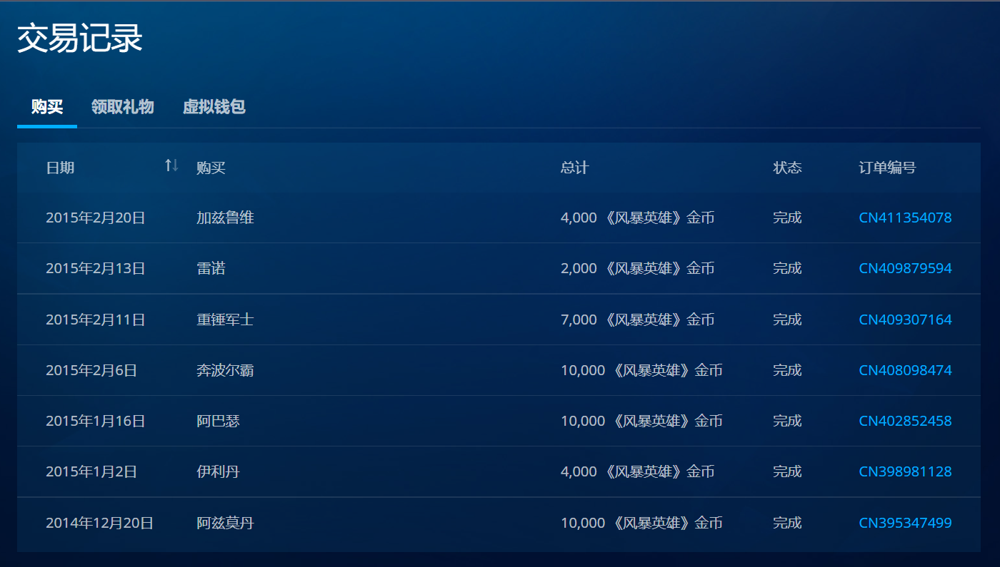

暴雪
第一次接触暴雪的游戏，大概是在高中的时候。太过久远的记忆记不清楚了，翻了一下消费记录，第一次购买风暴英雄的英雄是在 2014 年年末，距今已经接近 8 年了。 
炉石也是差不多那时候开始接触，但买卡包没记录在交易记录里，也就没法追溯具体的时间了，而且那时候连银行卡都没，什么都消费不了，炉石只能组组蓝白卡组，很难讲有什么乐趣，其实也没留下太多印象。但风暴是不涉及氪金变强的，虽然也有英雄的限制，但风暴大胆的英雄设计让很多英雄都有自己独特的乐趣，比如阿巴瑟，奔波儿灞，阿兹莫丹，在没有装备限制的情况下，出现了很多其他 MOBA 不可能出现的英雄。 暗黑破坏神 2 我在初中（甚至小学？）的时候就接触过了，但第一次接触的时候似乎没什么耐心，而且也不被允许玩太久电脑，所以并没怎么通关，但那时候几乎就奠定了我对游戏“职业”的偏好。首选的是德鲁伊、死灵法师这样的召唤系，其次是法师。不过暗黑并没真正养成我对刷子游戏的喜好，哪怕后来我能通关了也仅局限于尝试不同角色从零到通关的过程，而对通关后刷刷刷的热情极低。这种类型的游戏，暗黑 3，无主之地，全境封锁，outriders，命运，基本都只处于通关后封箱的状态。暗黑 3 通关过两三个职业，之后在不同赛季反复下过几次，但都坚持不下去赛季内容，基本下几次图就又删了。无主 2 和 3 都通过，包括后来的小缇娜，我甚至都只单职业通关。全境 2 倒是玩了挺久，还建了个 excel 统计装备，刷了几套不错的搭配，DLC 也玩了，但育碧的一连串操作确实很打击热情，让本就很虚无的游戏装备更添了一份虚无感，之后就再没关注过了。outriders 的本体我也玩了差不多 160 小时，甚至录了人生第一份游戏攻略视频，2000+1500 的播放大概对一个从没发过视频的人来说处于一个不高不低的状态吧，不过我本来也只是录着玩的所以也不太在乎这个。但出 DLC 后看到那和本体差不多的价格，再回想起全境 2 重刷的痛苦经历，也不打算继续尝试了。而命运 2 对于一个在它登录 steam 后才了解到的人来说，剧情实在太没有代入感，我现在甚至一丁点相关的剧情都想不起来，只记得几个凯德几号之类的人名。而且许多实用装备直接和 PVP 或者高重复度 PVE 挂钩，对于不想无止境地投入时间的人来说也很劝退，所以只玩了它在 steam 上的第一个赛季，后来哪怕多次在 steam 首页推销新 DLC 也没关注。说到命运 2 想起了前面没提到的 warframe，大概下过下次，从国际服到国服到国际服，第一次下了后一脸懵逼，老图组不到，可能还有一些已经记不得的网络延迟之类的问题，所以没玩多久。后来有了国服，好像是首冲活动，拿了个榴弹，然后大家组队刷一个本，只要站在顶部不停射榴弹就好了，也有一种朴素的快乐，不太记得为什么退坑了。后来又试了下 steam 上的 warframe（第一次应该是直接从官网下的？），发现老图依然是组不到人，再度弃坑。所以这类网游根深蒂固的问题就是新鲜血液的匮乏，如果没有新的服务器，在度过开荒期后很难找到相同进度的玩家共同游戏，进而在新玩家减少和新玩家入坑难中恶性循环。 大晚上的不知道为什么突然写了一串和暴雪关系也不大的东西，先睡了等以后哪天想到了再说说酒馆战旗，星际 2 和新守望的故事吧，虽然以我的懒癌性格来说很可能就此断更。不管如何，暴雪在游戏史上可以说是伟大的，可惜没能跟上时代的步伐，总是慢了几个节拍。自走棋的引入倒是成功的，但后来想要引入战令，结果因为角色稀少，装饰部位也少，导致炉石战令和守望战令都没太多好评，只能把酒馆的 4 选 1 强行塞进战令导致风评进一步受损，而守望的多年停更换来的付费模式改变也更让人质疑暴雪出品必属精品的说法，毕竟游戏内容的变化很难说够得上几年的工作量，而画饼的 PVE 国服也等不到了（但就被视为 PVE 预告的万圣节副本和过去几乎没大变化来说，很难相信新 PVE 能拿得出相当于一个新模式的游戏内容）。然后重置版也谈不上成功，也许赚了不少钱但更像是挥霍 ip 以及对未来的透支。也许现在暴雪的存活之道也只在于曾经的情怀，而缺少了创作的激情吧。